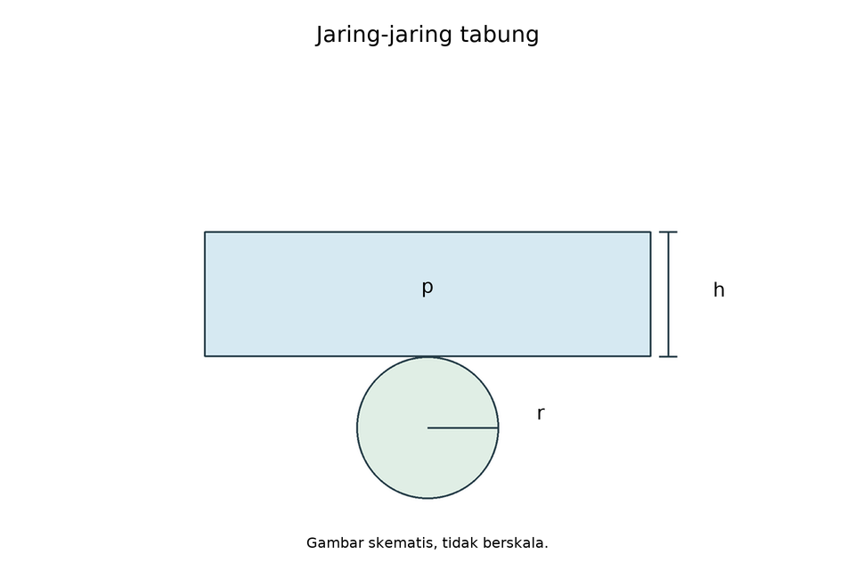
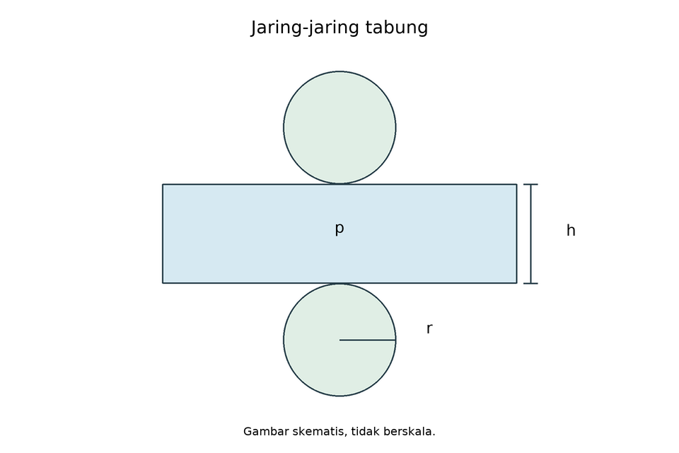
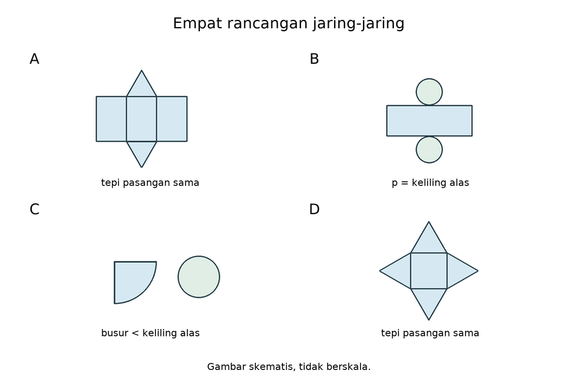

12 skenario konseptual Drill
pg-16-4-2 / original

Perhatikan empat gambar jaring-jaring bangun ruang di bawah ini!

Berdasarkan analisis Anda, jaring-jaring manakah yang TIDAK DAPAT dilipat menjadi sebuah bangun ruang yang utuh dan tertutup?
Kunci C
Pembahasan:
Jaring-jaring C merupakan jaring-jaring limas segi empat, namun memiliki 5 buah segitiga sebagai sisi tegak. Limas segi empat hanya membutuhkan 4 buah sisi tegak yang menempel pada 4 sisi persegi alasnya. Jika dilipat, satu sisi tegak akan tumpang tindih (tidak valid).
pg-16-4-2 / stock-01

Empat rancangan memiliki sambungan yang sesuai. Rancangan manakah yang kekurangan bidang sehingga tidak membentuk bangun tertutup?
Kunci C
Limas segi empat memerlukan empat segitiga sisi tegak; C hanya tiga, sehingga satu sisi terbuka. Komponen A,B,D lengkap dengan sambungan yang disyaratkan.
pg-16-4-2 / stock-02

Setiap rancangan mempunyai sambungan yang sesuai. Rancangan manakah yang gagal menutup karena ukuran sambungannya?
Kunci D
D tidak cukup panjang untuk mengelilingi alas; selimut menyisakan celah. A,B,C sudah memenuhi jumlah bidang dan kecocokan sambungan.
mcma-16-4-6 / original

Sebuah limas segitiga dibuka menjadi jaring-jaring. Pilihlah semua pernyataan yang benar mengenai jaring-jaring dan bangun ruang tersebut!
Kunci A,B,C
Limas segitiga memiliki empat bidang segitiga, enam rusuk, dan empat titik sudut. Pernyataan A,B,C benar; D salah karena titik sudut bukan lima.
mcma-16-4-6 / stock-01

Sebuah tetrahedron dibuka menjadi jaring-jaring, kemudian dilipat kembali. Pilih semua pernyataan benar tentang bangun yang sudah dilipat!
Kunci A,B,C
Tetrahedron: F=4,E=6,V=4 dan V-E+F=2. A,B,C benar; D salah. Titik sudut dihitung setelah dilipat, bukan pada gambar datar.
mcma-16-4-6 / stock-02

Sebuah limas segitiga memiliki satu alas dan tiga sisi tegak. Pilih semua hasil pemeriksaan yang benar!
Kunci A,B,C
A=1+3=4 bidang; B=3+3=6 rusuk; C=3+1=4 titik. Untuk D,4-6+4=2, bukan1.
mcma-16-4-7 / original

Sebuah tabung tertutup dibuka menjadi jaring-jaring yang terdiri dari dua lingkaran dan satu persegi panjang. Manakah pernyataan yang benar? Pilih tiga jawaban.
Kunci A,C,D
Pembahasan:
Pernyataan 1: Benar. Selimut tabung jika dibuka berbentuk persegi panjang dengan panjang = keliling alas.
Pernyataan 2: Salah. Jaring-jaring tabung terdiri dari 3 bangun datar (2 lingkaran dan 1 persegi panjang).
Pernyataan 3: Benar. Lebar persegi panjang tersebut sama dengan tinggi tabung.
Pernyataan 4: Benar. Luas permukaan total adalah jumlah dari seluruh komponen penyusun jaring-jaring.
mcma-16-4-7 / stock-01

Tabung tanpa tutup dengan jari-jari r dan tinggi h dibuka menjadi jaring-jaring. Pilih semua pernyataan benar!
Kunci A,B,D
Satu tutup dihilangkan, sehingga alas tinggal satu lingkaran. Selimut tetap berukuran2*pi*r kali h. A,B,D benar; C salah.
mcma-16-4-7 / stock-02

Tabung tertutup dipotong sepanjang satu garis tegak dan kedua tepi lingkarannya. Pilih semua pernyataan benar tentang bidang yang dilebarkan!
Kunci A,B,D
A,B,D benar. Rumus C hanya memasukkan satu lingkaran, padahal tabung tertutup memerlukan dua; luas total2*pi*r*r+2*pi*r*h.
pg-16-5-1 / original

Empat rancangan jaring-jaring berikut memiliki sambungan yang sesuai. A: tabung berjari-jari 7 cm dengan panjang selimut 44 cm. B: prisma segitiga dengan dua alas kongruen dan tiga persegi panjang sesuai sisi alas. C: tabung berjari-jari 7 cm dengan panjang selimut 20 cm. D: kerucut berjari-jari alas 7 cm dengan panjang busur juring 44 cm. Gunakan pi=22/7. Rancangan manakah yang tidak dapat menutup bangun dengan sempurna?
Kunci C
Tabung r7 memerlukan panjang selimut2*(22/7)*7=44cm. Rancangan C hanya20cm sehingga tidak menutup. A sesuai44cm; B sesuai komponen prisma; D busur44cm sesuai keliling alas.
pg-16-5-1 / stock-01

Seluruh bidang penyusun suatu net sudah lengkap. Rancangan manakah tetap gagal menjadi bangun tertutup?
Kunci C
C menyisakan celah sepanjang sambungan alas-selimut. A,B,D sudah memenuhi kecocokan tepi yang dinyatakan.
pg-16-5-1 / stock-02

Sebuah tabung tertutup akan dirakit. Dua lingkaran kongruen sudah tersedia. Kondisi selimut manakah yang menjamin sambungan alas dapat menutup tepat tanpa tumpang tindih?
Kunci C
Selimut harus mengelilingi seluruh tepi alas satu kali, sehingga panjangnya2*pi*r dan lebarnya h. A,B,D terlalu pendek untuk r>0.